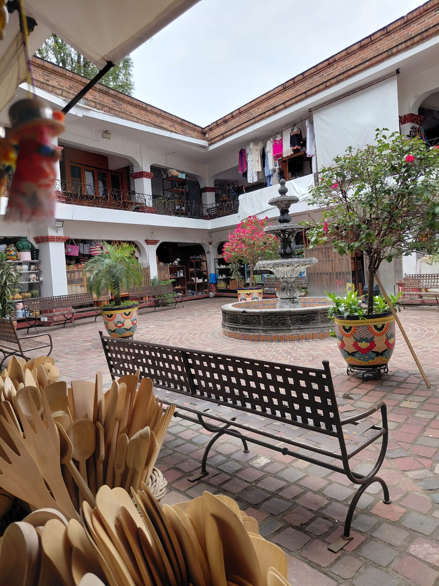

El Mercado de Artesanías de Valle de Bravo es un lugar donde los visitantes pueden encontrar una amplia variedad de artesanías de la región y de toda la República, las artesanías más típicas incluyen cerámica de barro vidriado, hierro forjado, tejidos hechos por los indígenas mazahuas, bordados y deshilados, cerámica de alta temperatura y cestería de ocoxal, este mercado no solo ofrece productos decorativos, sino que también transmite la herencia cultural de la comunidad. cultura.gob.mx+5
El Mercado de Artesanías de Valle de Bravo es un destino turístico popular que ofrece una experiencia única y divertida para los visitantes. Es un lugar ideal para quienes buscan souvenirs únicos, regalos o simplemente desean apreciar la creatividad de los artesanos locales.
Productos: Cerámica de barro, hierro forjado, tejidos, bordados, cerámica de alta temperatura, cestería, madera tallada, ebanistería fina, hierro forjado, muebles, vajillas, floreros, deshilados, tejidos de lana, bordados, manteles, rebozos, tapetes, colchas, fundas de cojines, manteles y servilletas. 4
Ubicación: Avenida Benito Juárez, en el corazón del centro de Valle de Bravo. 2
Horario: Lunes a domingo, de 10:30 a 20:00 horas; los fines de semana, hasta las 22:00 horas. 1
Accesibilidad: A 400 metros de la alameda central. 1